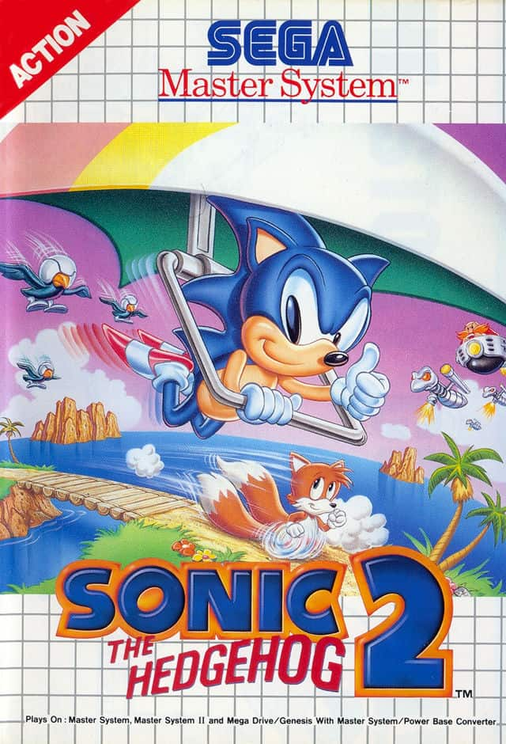
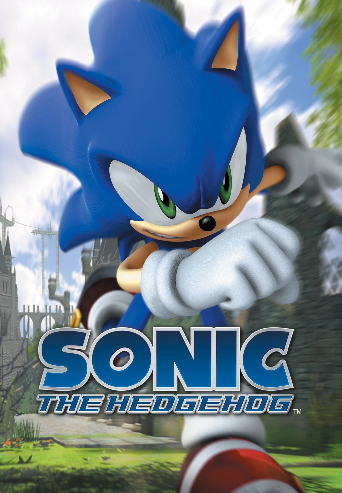

Meu primeiro contato com a franquia foi com o jogo Sonic The Hedgehog 2. Mas não a versão de 16-bits para MegaDrive/Genesis, cuja fama a precede. Foi com a versão de 8-bits para o Master System, a versão secundária. E como se já não fosse confuso o bastante, joguei no Virtual Console do Nintendo Wii, que emulava diversos jogos antigos de múltiplos consoles.
O jogo foi brutal para mim. Extremamente difícil, não tinha como salvar o jogo (ou seja, em caso de Game Over, tinha que voltar para o começo) e o Tails, que aparecia na capa do jogo, não era jogável nessa versão. Eu nunca consegui zerar ele, mas apesar de ser frustrante não me dava por vencido. Eu joguei, joguei e joguei, mas nunca venci. Foi uma experiência muito frustrante para mim. Some isso com o fato de que eu era fã de carteirinha do seu rival, Super Mario, e você chega em alguém que simplesmente odiava Sonic The Hedgehog.
E assim foi por muitos anos. Eu não o odiava ativamente, mas se você me perguntasse quem era melhor: Mario ou Sonic, eu teria a resposta na ponta da língua.
Foi só em 2020 que a história mudou. Nessa altura eu já não jogava um jogo novo de Super Mario há muito tempo. Não porque era coisa de criança, mas simplesmente não tinha condições de ter os novos consoles da Nintendo. Apesar de ser algo pequeno, eu me sentia mal por não poder experienciar as novas instalações da franquia em que cresci jogando.
Este também foi o ano da pandemia, e fiquei muito inseguro com a situação toda. Nesse período me tornei ainda mais recluso socialmente, e me tornei muito inseguro de mim mesmo. Me perguntava se eu teria algum futuro, e se ele seria feliz de alguma forma. Na minha família as coisas continuaram colapsando, assim como a nossa situação financeira. E a cada coisa que acontecia, eu me culpava.
Perdi a confiança em mim mesmo e entrei numa fase depressiva da minha vida. Sentia que precisava me provar para os outros me aceitarem e pensava que as pessoas não se sentiam bem ao meu lado. O que eu tinha a oferecer? Por que alguém ficaria ao meu lado? Por dó? De novo?


Eu estava perdido. E para me distrair assistia vídeos no Youtube. Fazia calar a voz na minha cabeça um pouco. E, de repente, um vídeo intrigante é recomendado para mim. Uma dublagem das cinemáticas de Sonic The Hedgehog (2006) feita por fãs.
O vídeo tem 1h30 de duração, e eu vi tudo de uma só vez. Eu estava encantado, e ao mesmo tempo muito confuso. Que jogo é esse? Ele é tão bonito, mas tão... feio ao mesmo tempo? Por que um grupo de dubladores se dedicaram a fazer um vídeo tão bem editado e engraçado, para um jogo como esse? Acima de tudo, eu me perguntei: o que é Sonic 2006?
A resposta dessa pergunta: um dos piores jogos do mundo. Como assim? O clímax é tão bom! Tem tantos personagens! 1h30 de pura história! Como esse é um dos piores jogos do mundo? E como eu nunca ouvi falar disso antes?
Eu vi diversas críticas e documentários, e a conclusão era que apesar da tragédia que foi Sonic 2006, esse foi um dos últimos jogos com uma visão tão robusta e ambiciosa na franquia. Por conta da péssima gestão de funcionários e prazos impossíveis, a visão dos desenvolvedores foi ofuscada por bugs e problemas de jogabilidade, gerando uma fama que poderia ter destruído a franquia Sonic The Hedgehog.
Então eu conheci Project-06, um projeto feito por um fã que recriava o jogo inteiro do zero para PCs, com o objetivo de mostrar a visão real dos desenvolvedores para o mundo. E de fato, era muito promissor. O projeto é considerado por muitos o melhor jogo de Sonic, mesmo não sendo oficial ou a versão final.
Dali em diante eu fui me adentrando cada vez mais nesse nicho. Em 6 meses eu sabia todos os jogos da franquia, as principais opiniões, os ciclos, os fãs, etc. Parece insano, mas foi uma jornada incrível. Conhecer cada jogo, cada história, e jogar eles. Eu me tornei um fã quase sem perceber. E eu passei a entender: por que os fãs dessa franquia se dedicam tanto nesses projetos gigantes, como fanarts, fandubs, fangames? Por que eles sempre estão discutindo na internet sobre os mínimos detalhes, como o tom de azul do Sonic, ou o tamanho dos espinhos, ou se o jogo tem físicas genuínas ou não? O que Sonic tem que faz as pessoas serem tão apaixonadas por ele?
 É porque Sonic é único. Os jogos, os personagens e as histórias. Não existe nenhum jogo que passe a mesma sensação que um jogo do Sonic. Os personagens têm personalidades que se destacam nas suas histórias, que carregam valores muito poderosos. Para mim, os principais valores que aprendi com essa franquia são: Confiança, Atitude e Bondade.
É porque Sonic é único. Os jogos, os personagens e as histórias. Não existe nenhum jogo que passe a mesma sensação que um jogo do Sonic. Os personagens têm personalidades que se destacam nas suas histórias, que carregam valores muito poderosos. Para mim, os principais valores que aprendi com essa franquia são: Confiança, Atitude e Bondade.
Sonic nunca dúvida de si mesmo, não importa a situação em que ele esteja. Mesmo que todas as chances estejam contra ele, ele continuará a lutar como sempre lutou.
Quando Sonic vê uma injustiça, ele toma atitudes para mudar o futuro. Ele salva o mundo não porque ele tem a responsabilidade de ser um herói, mas porque é o que é certo para ele. Se você tem tempo para se preocupar, para sentir medo... corra. Tome uma atitude! Não fique parado e faça a diferença.
Para onde Sonic vai, ele transforma as pessoas. Ele as ajuda a ver a vida de forma mais leve, e os inspira a mudar e agir. Sonic, de certa forma, representa a bondade que existe dentro de cada um de nós. Uma força que permite que mudanças ocorram, que apoiemos uns aos outros, que nos faz viver a vida dia após dia. Basta lembrarmos disso, e nosso destino toma um novo rumo.
Para mim, Sonic representa tudo isso. Uma força dentro de todos nós que nos torna “invencíveis”, no sentido e não desistir até o fim. De continuar em movimento. De seguir os ventos para as novas aventuras que o futuro guarda. E, no caminho, incentivar as pessoas a reencontrar essa força dentro deles.
Apesar dos desafios que eu estava enfrentando, pensar como o Sonic fez com que eu me sentisse melhor, mais confiante e resiliente. Ele me inspirou, assim como ele inspirou Tails. Um dia, ao acaso, o vi correndo ao meu lado, e minha vida mudou completamente.